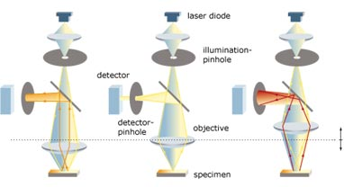

Optics and communications have stimulated the explosion of the field of photonics. Bio-photonics is a new but important branch that applies the knowledge and technology base of photonics to the interaction of photons in biological tissues (rather than optical fibers or switches) and the interpretation of detected signals. It is multidisciplinary in nature and incorporates many science disciplines such as physics, chemistry, mathematics, biology, and engineering. Our areas of interest include optical imaging and fibre optic biosensors.
Out of a wide variety of imaging methods existing we are focusing on laser based confocal microscopy. A confocal microscope creates sharp images of a specimen. Confocal microscope incorporates the ideas of point-by-point illumination of the specimen and rejection of out-of-focus light. Confocal microscopy especially in the fluorescence mode has several advantages over the reflected or transmitted modes. Microscopes fitted with the necessary optics for confocal imaging can generate images of relatively thin sections. An assembly of motor-driven vertical and horizontal mirrors scans the laser across the specimen. The fluorescence is collected and processed to produce high-resolution, real time, cross sectional or 3-dimensional images of the sample.

Biosensors are detection devices that utilize biological molecules for recognition and quantification of the analyte of interest. These biological molecules are chosen for their specificity and affinity for the analyte(s) of interest and can be enzymes, antibodies, chelators, receptors, antibiotics and nucleic acids. More importantly, these biological components have the unique ability to convert a recognition event into a change in optical property. These optical changes may take the form of fluorescence emission or quenching, chemi-luminescence, changes in absorbance and refractive index, fluorescence energy transfer, etc.
Biosensor technology has greatly benefited from the boom in the telecommunications industry in the 1970s and 1980s. A large variety of relatively inexpensive, high quality optical fibers has become available for use as biosensor substrates. The use of optical fibers in biosensors enables sample analysis in environments which are incompatible with electronic components or manual operations. Not only is the fiber optic biosensor format amenable to analysis in remote locations, but it is also non-destructive to samples and highly adaptable to in vivo measurements.
Fiber optic biosensors have the additional advantage of rapid sensing, consistent with realtime monitoring. For the most part, the speed of analyte detection is limited by the recognition event and not by the speed of optical signal transduction. Thus, while techniques such as the enzyme-linked immunosorbent assay (ELISA) and animal or cell culture bioassays may be considered the gold standard for sample analysis, biosensors are rapidly gaining an advantage over these methods because of the rapidity of response.
While speed of signal transduction is a key advantage of these biosensors, they are also immune to influences which often interfere with electrochemical transducers: radio frequency interference, voltage surges, electromagnetic radiation, harmonic induction, interference by proximal high voltage and corrosion. Furthermore, depending on the optical configuration and signal transduction scheme, many fiber optic biosensors are immune to the effects of sample matrices and the presence of naturally occurring fluorophores; the use of near-infrared dyes further reduces these effects. Use of near-infrared dyes has spurred the use of diode lasers for fluorescence excitation; thus, fiber optic biosensors are becoming smaller and more portable. With the decrease in size and weight, the expenses involved in setup and maintenance of large laser systems are also lowered.